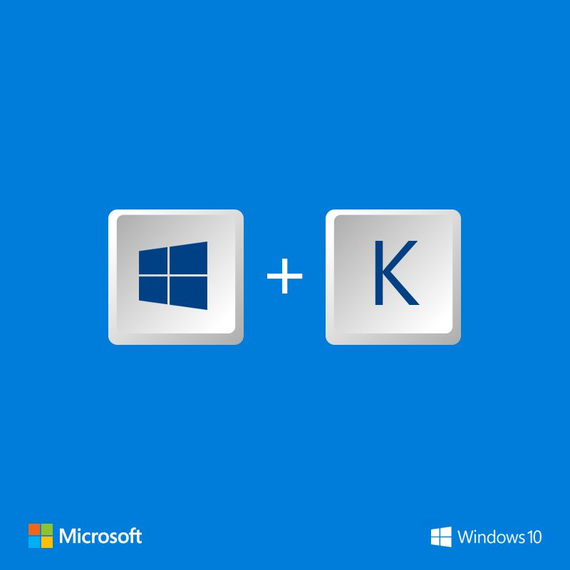
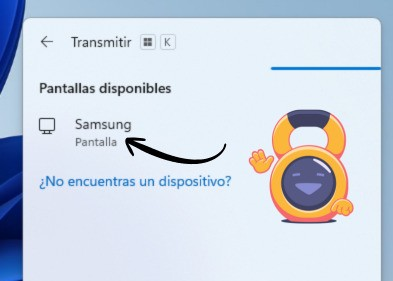
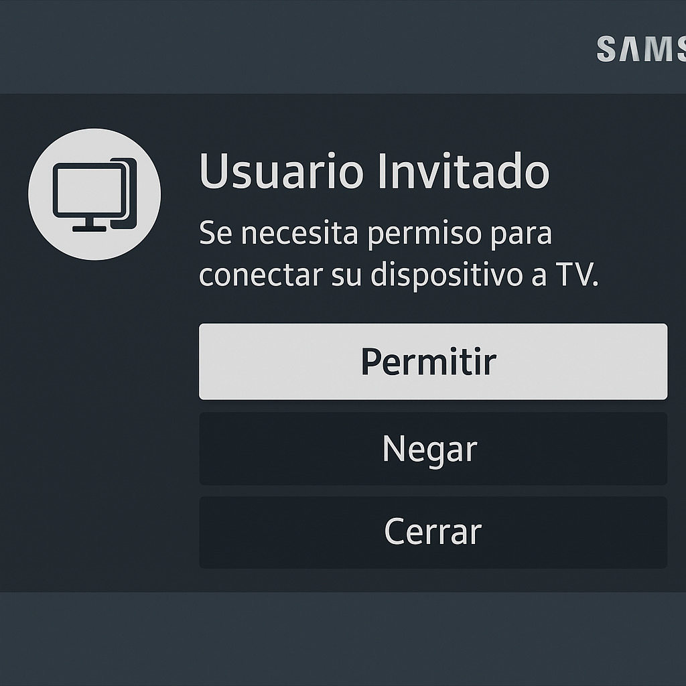
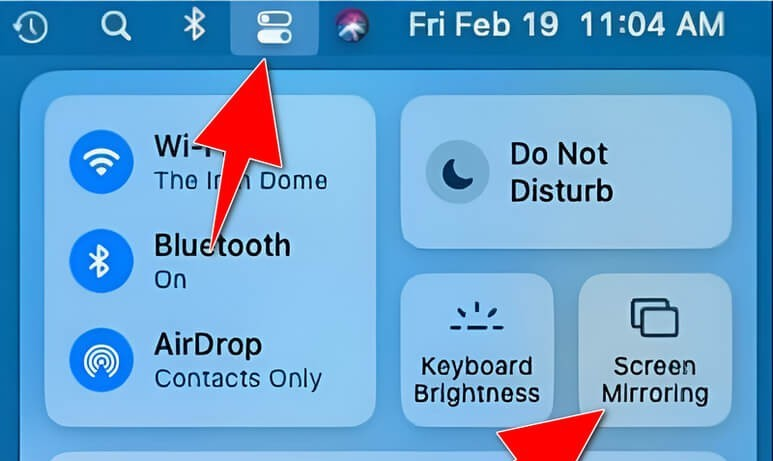
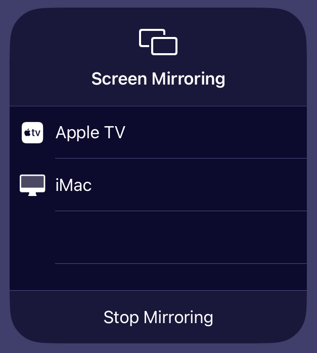
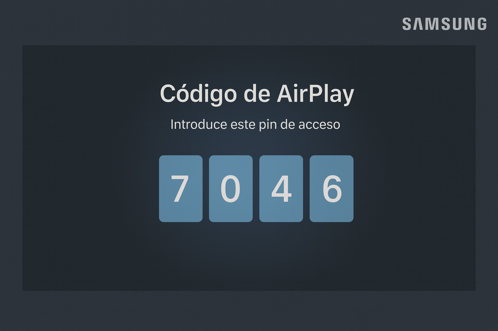
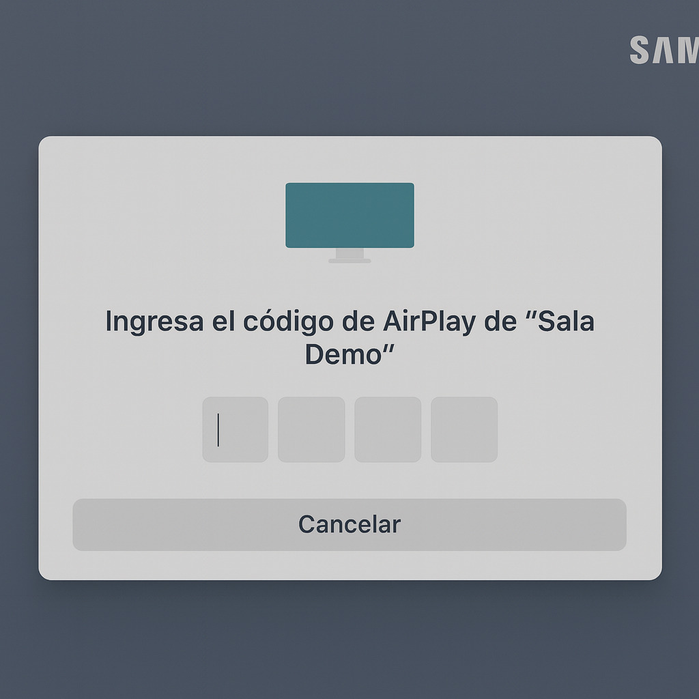

Cómo Transmitir Pantalla a la TV
Windows
Desde Notebook a TV
Mac
Desde Mac a TV
⚠️ Importante
Asegúrate de que tu notebook con Windows y la TV estén conectados a la misma red Wi-Fi.
1
Activar Wi-Fi en Windows en tu equipo
Ve a Configuración > Red e Internet > Wi-Fi y asegúrate de que esté activado y conectado a tu red.
2
Abre la función de proyección inalámbrica
Presiona las teclas Windows + K (o en algunas versiones Windows + P y luego selecciona Conectar a
una pantalla inalámbrica).

Aparecerá un panel lateral en la esquina inferior derecha mostrando las pantallas disponibles.

3
Selecciona tu TV o pantalla Samsung de la lista
La primera vez, en la pantalla del televisor aparecerá un mensaje de confirmación.
Acéptalo para autorizar la conexión.

4
¡Listo!
Tu escritorio de Windows se duplicará o extenderá en la pantalla del TV de forma inalámbrica.
⚠️ Importante
Verifica que tu Mac y la TV estén conectados a la misma red Wi-Fi y que tu TV sea compatible con
AirPlay.
1
Activa el Wi-Fi en tu Mac.
Asegúrate de que tu Mac esté conectado a la misma red Wi-Fi que tu TV Samsung. Ve a Preferencias del
Sistema > Red para verificar.
2
Abre el Centro de Control en la parte superior derecha de la barra de menús.
Haz clic en el ícono del Centro de Control (dos interruptores superpuestos).
Luego selecciona la opción Duplicar pantalla (AirPlay) como se muestra en la Imagen.

3
Elige la pantalla
Elige la pantalla o TV a la que te quieres conectar de la lista que aparece.

4
Introduce el código de seguridad
En el televisor aparecerá un código la primera vez que te conectes.

Escríbelo en tu Mac cuando se solicite.

5
¡Listo!
La pantalla de tu Mac ahora estará duplicada o extendida en el televisor de manera inalámbrica.